Шумеры
История первой цивилизации за двадцать минут: видео-эссе для моего канала.

YouTubeСмотреть ролик ↗
История первой цивилизации за двадцать минут: видео-эссе для моего канала.
Серия рилсов об истории искусства: как одна картина отвечает другой. Заимствованные детали обведены на обеих картинах, путь показан на карте.
Типографика и 3D: плакаты к стихам Тура Ульвена и Гуннара Экелёфа, «Ниневия», «Ланиакея».
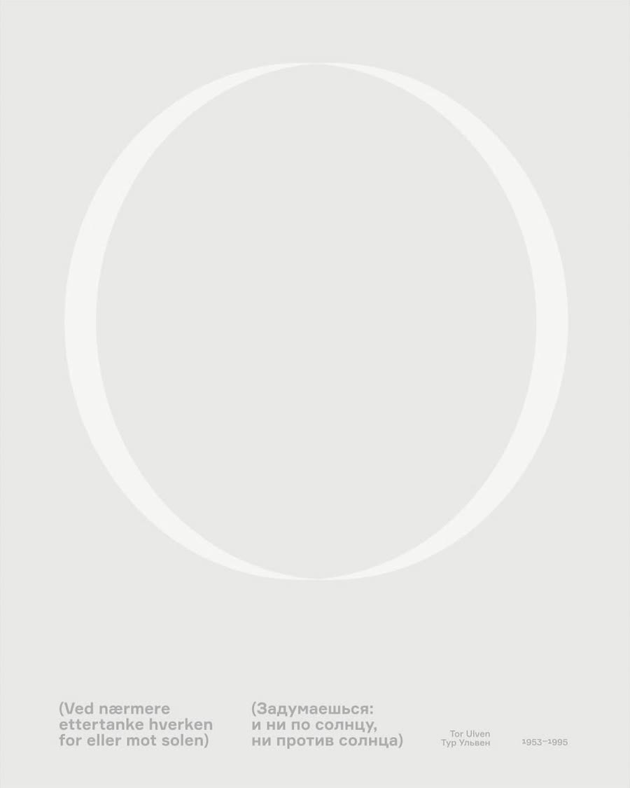
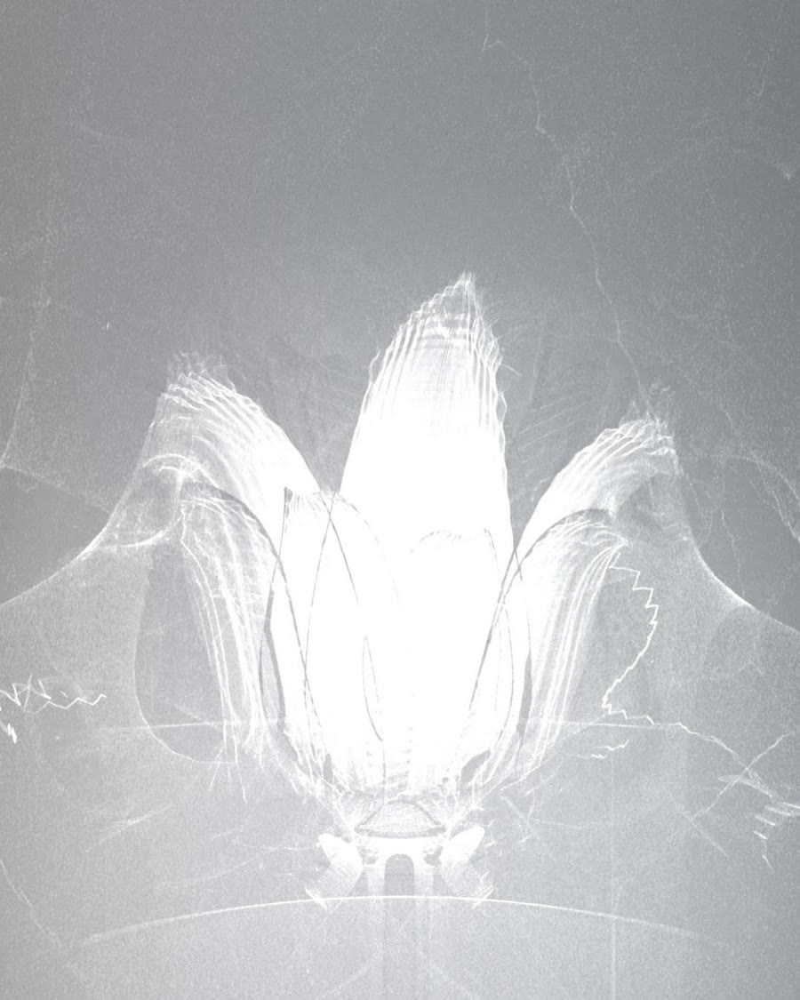
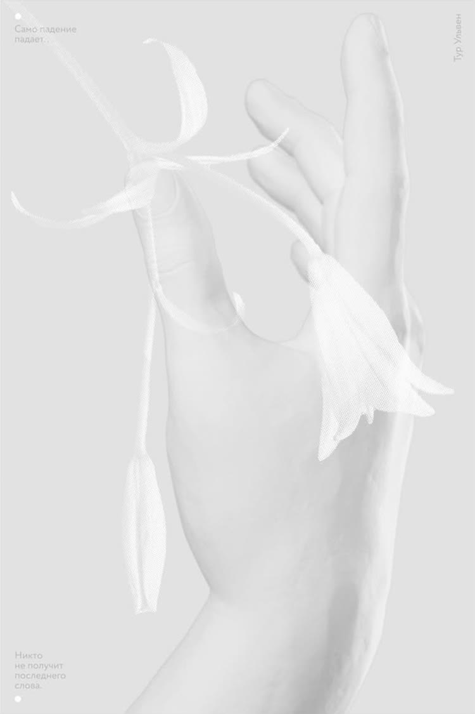
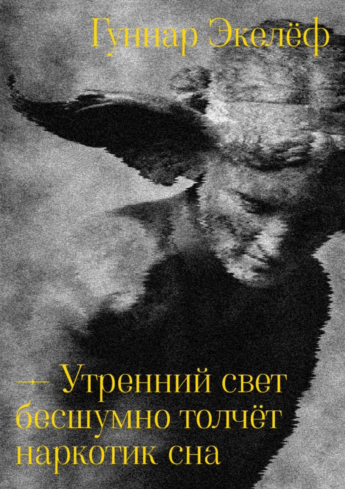
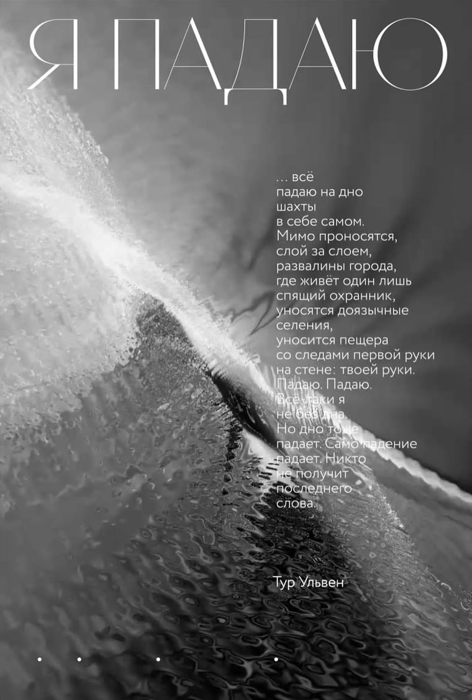
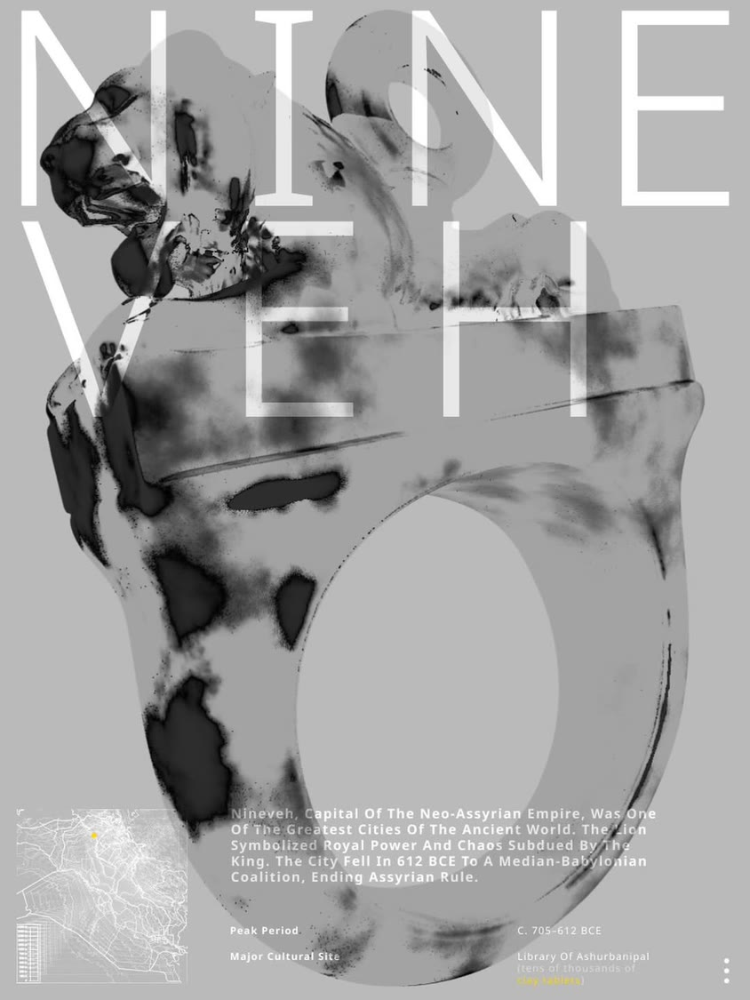
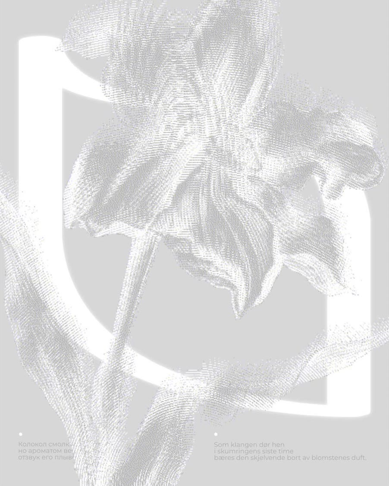
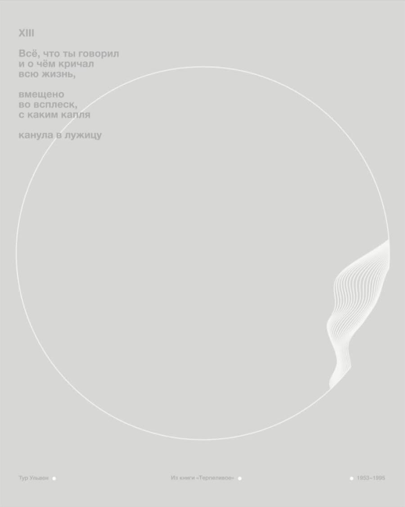
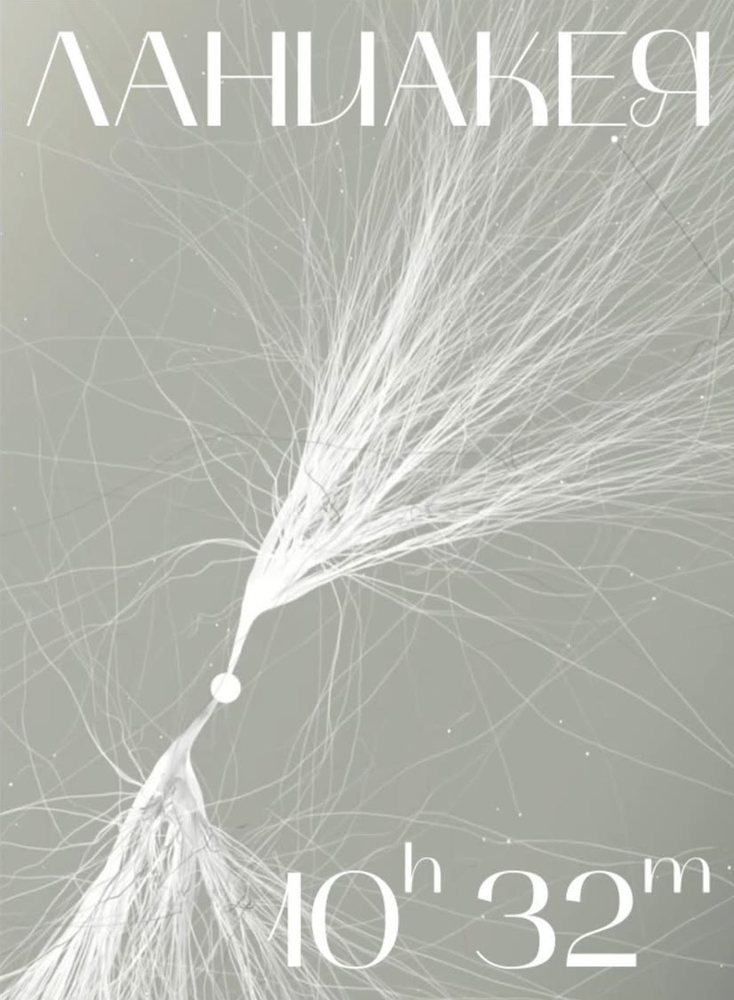
Сайты и веб-приложения о литературе и истории. Дизайн и код.
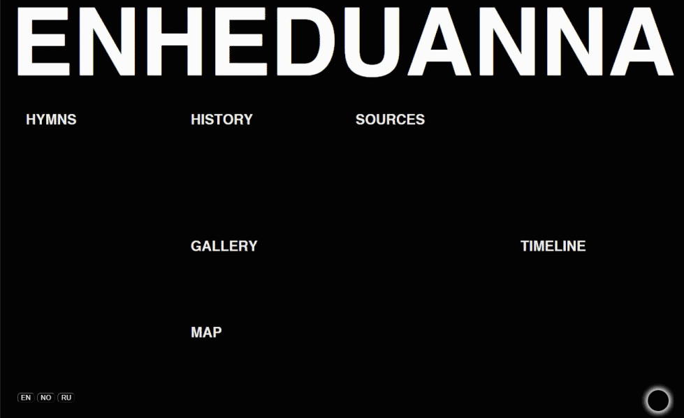
Сайт о первом известном по имени авторе в истории, с 3D-визуализацией.
Открыть ↗Скоро здесь будут рекламные ролики.
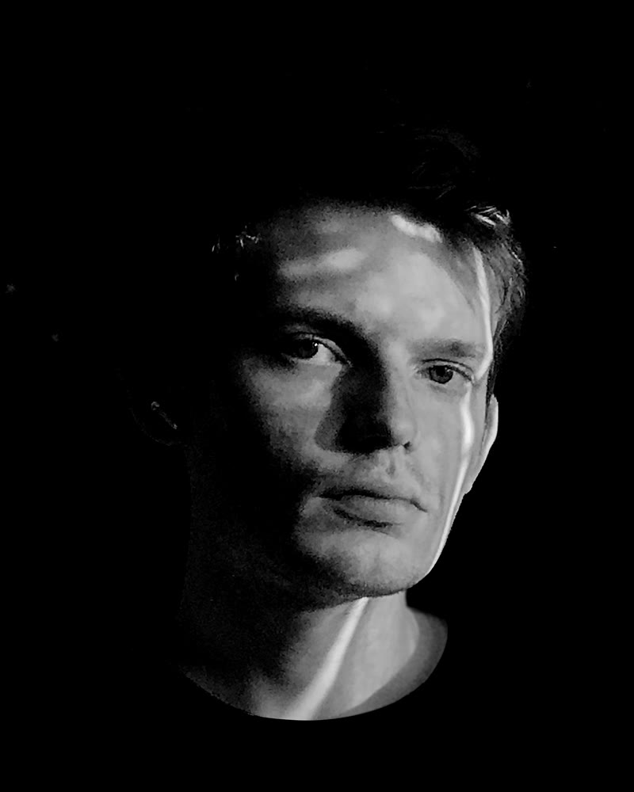
Моушн-дизайнер и фронтенд-разработчик. Пишу сценарии и делаю образовательные видео для своего канала. До этого шесть лет работал дизайнером в образовательных проектах.